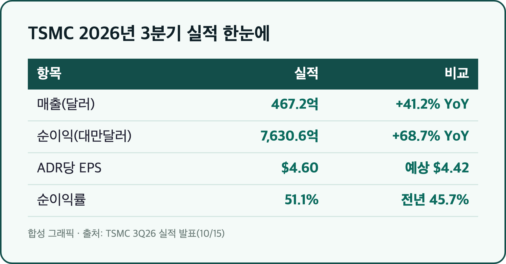
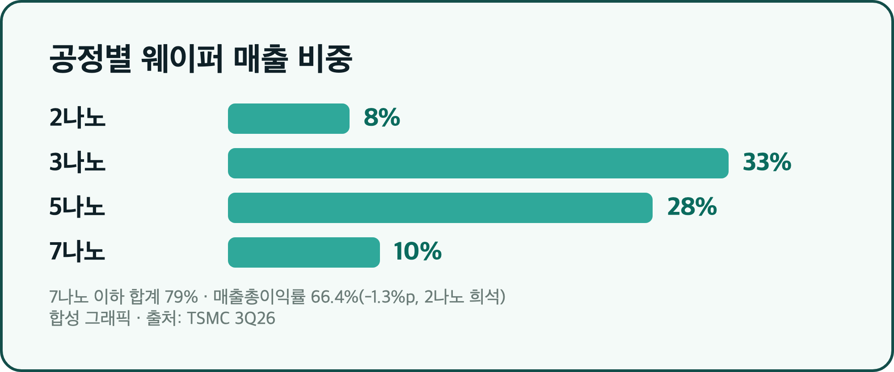
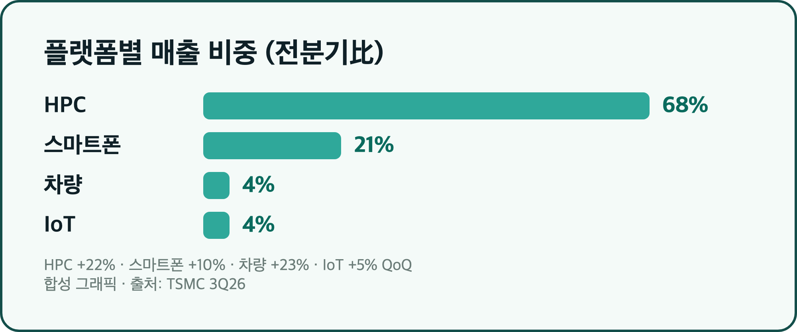
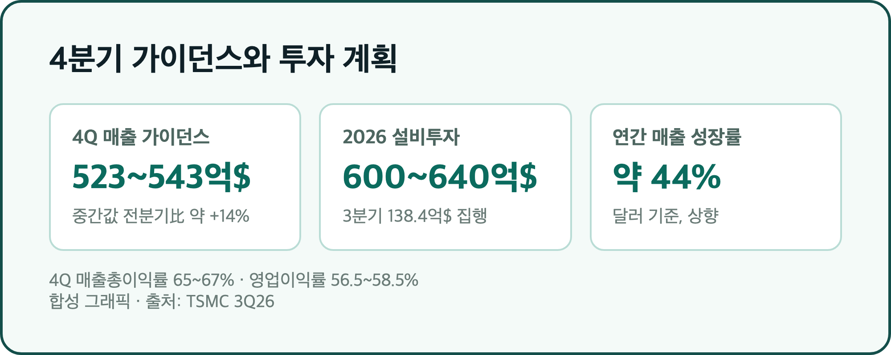
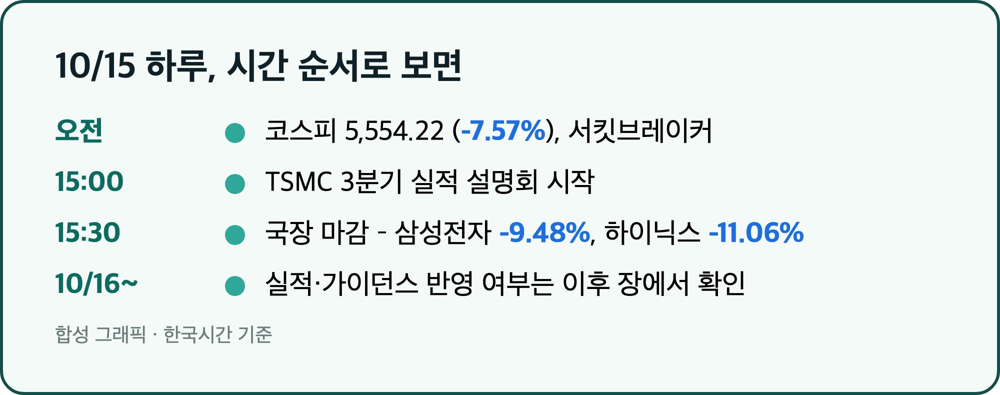

TSMC 순이익 7,630억 6,000만 대만달러. 전년 대비 +68.7%, 분기 기준 사상 최대입니다. 오늘은 이 숫자가 어디서 나왔는지, 그리고 삼성전자 25주를 들고 있는 입장에서 뭘 봐야 하는지 정리해볼게요.
참고로 TSMC는 회계연도가 캘린더 연도와 같아서, 이번 건 말 그대로 2026년 3분기(7~9월) 실적입니다. 발표는 10/15(목) 한국시간 오후 3시 설명회로 나왔어요. (일부 매체는 10/16로 적었는데, 공식 transcript와 SEC 제출 자료 기준으로는 10/15가 맞습니다.)
💰 매출 1조 4,942억 대만달러, 순이익 7,630억 대만달러 – 가이던스도 넘겼어요
매출 467억 2,000만달러 (전년比 +41.2%) / 순이익 7,630억 6,000만 대만달러 (전년比 +68.7%) / EPS 29.43대만달러 (ADR당 4.60달러) |

| 항목 | 3분기 실적 | 비교 |
|---|---|---|
| 매출(대만달러) | 1조 4,942억 4,200만 | 전년比 +50.9% |
| 매출(달러) | 467억 2,000만 | 가이던스 446억~458억 상회, 전분기比 +16.2% |
| 순이익 | 7,630억 6,000만 대만달러 | LSEG 예상 7,463억 4,000만 대비 약 +2.2% |
| ADR당 EPS | 4.60달러 | 컨센서스 4.42달러 |
| 순이익률 | 51.1% | 전년 45.7% |
매출 100원어치 팔아서 51원이 순이익으로 남았다는 얘기예요. 숫자만 놓고 보면 어느 쪽으로 봐도 예상을 웃돌았습니다. 참고로 한 매체는 순이익을 763.06억으로 적었는데, 단위 오타로 보이고 7,630억 6,000만 대만달러가 맞는 수치입니다.
📉 매출총이익률 66.4%로 1.3%p 하락 – 2나노가 마진을 깎았어요
매출총이익률 66.4% (전분기比 -1.3%p) / 영업이익률 58.7% (가이던스 56~58% 상회) |

| 공정 | 웨이퍼 매출 비중 |
|---|---|
| 2나노 | 8% |
| 3나노 | 33% |
| 5나노 | 28% |
| 7나노 | 10% |
| 7나노 이하 합계 | 79% |
매출총이익률이 떨어진 이유는 회사 설명으로는 2나노 초기 램프업 때문이에요. 새 공정이 막 양산에 들어가면 수율과 감가상각 부담 때문에 평균 마진을 잠깐 깎는다는 거죠. 그래도 영업이익률은 58.7%로 가이던스 상단을 넘겼습니다. 다만 영업외수익은 958억 3,000만에서 345억 9,000만 대만달러로 줄었는데, 2분기에 뱅가드(VIS) 지분 관련 이익이 섞여 있던 영향이라고 해요. 순이익이 전분기보다 +8.0%밖에 안 늘어난 이유도 여기서 어느 정도 설명됩니다.
🤖 HPC가 매출의 68% – AI가 TSMC를 끌고 가는 구조
HPC 68% (전분기比 +22%) / 스마트폰 21% (+10%) / 차량 4% (+23%) / IoT 4% (+5%) |

HPC, 쉽게 말해 AI 가속기와 서버용 칩이 매출의 3분의 2를 넘겼어요. C.C. 웨이 CEO는 "수요는 매우 강하다. 둔화 조짐은 없다"고 직접 말했고, AI 수요가 현재 공급을 여전히 웃돈다고 설명했습니다. 반면 소비자·가격 민감 부문은 부품 가격 상승과 거시 불확실성이 부담이라 2027년 계획은 신중하게 잡겠다고 선을 그었어요. 호황이 전 영역으로 고르게 퍼진 건 아니라는 뜻이죠.
🔮 4분기 가이던스 523억~543억달러 – 연간 성장률은 약 44%로 상향
4Q 매출 523억~543억달러 (중간값 전분기比 약 +14%) / 2026 설비투자 600억~640억달러 / 연간 매출 성장률 약 44% |

4분기 매출총이익률은 65~67%, 영업이익률은 56.5~58.5%로 제시했어요. 설비투자는 올해 600억~640억달러로, 7월에 520억~560억달러에서 올려 잡은 수준을 유지했고 3분기에만 138억 4,000만달러를 썼습니다. 2026~2028년 투자는 지난 3년보다 "훨씬 더 높을" 거라고도 했고요. 애리조나 2공장 양산은 2027년 3분기로 소폭 앞당겨졌지만, CFO는 해외 팹 때문에 마진 희석이 앞으로 3~4%p까지 커질 수 있다고 밝혔어요. 돈은 많이 벌지만 쓰는 돈도 같이 커지는 구조입니다.
🇰🇷 삼성전자 25주 입장에서 – 주가 반응은 아직 확인 전이에요
삼성전자 210,000원 (-9.48%) / SK하이닉스 1,262,000원 (-11.06%) — 10/15 마감 |

타이밍이 애매했어요. 한국 정규장은 10/15 오후 3시 30분에 끝났고 TSMC 설명회는 오후 3시에 시작했으니, 그날 종가에는 가이던스가 거의 반영되지 않았습니다. 대만 증시도 설명회 전에 마감해서 TSMC 대만 종가(2,440대만달러, -2.01%)는 실적 이전 가격이에요. 미국 ADR 반응은 제가 이 글을 쓰는 시점에 확정된 수치를 확인하지 못해서 적지 않았습니다.
10/15 국장은 미국 9월 CPI 3.7% 충격으로 코스피가 -7.57%, 삼성전자 -9.48%, SK하이닉스 -11.06%까지 갔고, 제 25주도 하루에 한 주당 22,000원씩 빠졌어요. TSMC 숫자가 이 분위기를 되돌릴 재료가 되는지는 오늘 장이 답을 줄 텐데요, 적어도 "AI 수요가 둔화되고 있다"는 걱정과는 반대되는 숫자인 건 맞습니다. 삼성전자는 이미 10/8에 3분기 영업이익 107조 4,000억원을 잠정 발표했고, SK하이닉스 확정 실적은 10/27로 예정돼 있어요.
마무리하며
TSMC는 순이익 7,630억 6,000만 대만달러, 매출총이익률 66.4%, 4분기 가이던스 523억~543억달러를 내놨습니다. 숫자는 좋은데 마진은 2나노 때문에 소폭 내려왔고, 투자 규모는 계속 커지고 있어요.
오늘 체크할 건 세 가지예요. 코스피 반응, TSM ADR 흐름, 그리고 10/27 SK하이닉스 발표. 삼성전자 25주는 그대로 둡니다.